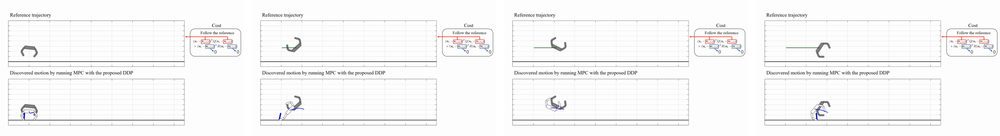

IEEE/RSJ International Conference on Intelligent Robots and Systems (IROS), 2022
Gijeong Kim (1) Dongyun Kang (1) Joon-Ha Kim (1) Hae-won Park (1)
(1) Korea Advanced Institute of Science and Technology

Abstract
In this work, we propose a novel differential
dynamic programming (DDP) framework for systems involving
contact with the ground. The approach converts a general
constrained differential dynamic programming into contact-
implicit one by incorporating contact dynamics in a linear
complementarity problem (LCP) formulation. Analytical gra-
dients of the contact dynamics are obtained through a relaxed
complementarity condition in the LCP formulation that helps
the search directions of optimization avoid stalling in bad local
minima or saddle points. Incorporation of contact dynamics and
its analytical gradients into DDP enables an online discovery
of not only dynamically-feasible trajectories of states, control
inputs, and contact forces but also contact mode sequences.
We demonstrate that our Contact-Implicit Differential Dynamic
Programming framework successfully finds totally new dynamic
motions with contact mode sequences in a variety of robotic
systems including an one-legged hopping robot and planar
quadrupedal robot in simulation environment.
@INPROCEEDINGS{9981476,
author={Kim, Gijeong and Kang, Dongyun and Kim, Joon-Ha and Park, Hae-Won},
booktitle={2022 IEEE/RSJ International Conference on Intelligent Robots and Systems (IROS)},
title={Contact-Implicit Differential Dynamic Programming for Model Predictive Control with Relaxed Complementarity Constraints},
year={2022},
volume={},
number={},
pages={11978-11985},
doi={10.1109/IROS47612.2022.9981476}}